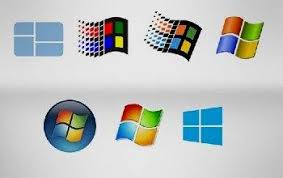

PROGRAMACION DE LAPSO 2021---2022
SISTEMAS OPERATIVOS PRIVADOS
PROGRAMACION DE LAPSO 2021---2022
SISTEMAS OPERATIVOS PRIVADOS
SISTEMAS OPERATIVOS PRIVADOS
El software privativo es software que no es libre ni semilibre. Su uso, redistribución o modificación están prohibidos, requieren que solicite una autorización, o está tan restringido que de hecho no puede hacerlo libremente. Tiene el código fuente serrado Sistema operativo más empleado a nivel mundial debido, entre otras cosas, a su entorno amigable con el usuario inexperto. permitió a los millones de usuarios, en el mundo, acceder a una interfaz gráfica, basada en el concepto de ventanas (Una ventana representa un tarea ejecutada o en ejecución) En un inicio las primeras versiones fueron simplemente un entorno gráfico para el sistema operativo DOS (desde la versión lanzada en 1985 hasta la versión 3.11), desde WINDOWS 95 (boom de ventas de esta versión), se tiene ya un sistema operativo con funcionalidad de multitarea y multiusuario
Es un programa o conjunto de programas de un sistema informático que gestiona los recursos de hardware y provee servicios a los programas de aplicación de software, ejecutándose en modo privilegiado respecto de los restantes (SON LOS QUE ADMNISTRAN LOS RECURSOS DEL COMPUTADOR) 1.Mayor compatibilidad con el hardware.
2.Soporte para todo tipo de hardware
3.Mayor mercado laboral actual
4.Unificación de productos
5.Más compatibilidad en el terreno de multimedia y juegos.
6.Interfaces gráficas mejor diseñadas.
7.Mayor mercado laboral actual
8.Menor necesidad de técnicos especializados
9 .Menor necesidad de técnicos especializados
10 .Las empresas que desarrollan este tipo de software son por lo general grandes y pueden dedicar muchos recursos, sobre todo económicos, en el desarrollo e investigación
1.Imposibilidad de copia
2.Imposibilidad de modifación
3.Restricciones en el uso (marcadas por la licencia).
4.Por lo general suelen ser menos seguras.
5.El coste de las aplicaciones es mayor
6.El soporte de la aplicación es exclusivo del propietario.
7.El usuario que adquiere software propietario depende al 100% de la empresa propietaria.
8.Imposibilidad de redistribución
9.Puedes tener errores de compatibilidad en sistemas nuevos.
10.Si quieres aprender mas sobre el sistema debes de pagar eso informacion.
1. Este software no te pertenece no puedes hacerle ningún tipo de modificación al código fuente.
2.No puedes distribuirlo sin el permiso del propietario.
3.El usuario debe realizar cursos para el manejo del sistema como tal debido a su alta capacidad de uso.
4.Este posee accesos para que el usuario implemente otro tipo de sistema en el.
5.Cualquier ayuda en cuanto a los antivirus.
6 .Solo se puede instalar una licencia por computadora.
7 .Utiliza un sistema de archivos NTFS y es compatible con FAT32 y es multitarea y multiusuario.
8 .Es muy conocido y utilizado a nivel mendial
9.Son multitareas y multiusuarios
El software propietario o con derecho de autor no es más que un sistema operativo de manejo comercial que tiene expectativas como de actualizaciones y uso de programas reconocido en el área de la informática es decir que se refiere a cualquier programa informático en el que los usuarios tienen limitadas las posibilidades de usarlo, modificarlo o redistribuirlo (con o sin modificaciones), o cuyo código fuente no está disponible o el acceso a éste se encuentra restringido. Para la Fundación para el Software Libre (FSF) este concepto se aplica a cualquier software que no es libre o que sólo lo es parcialmente, sea porque su uso, redistribución o modificación está prohibida, o requiere permiso expreso del titular del software este sistema operativo posee varias actualizaciones que serian Microsoft Windows seven, xp, vista entre otros los cuales forman el manejo de los sistemas operativos privados con derecho de autor sin modificación alguna al código fuente del sistema.
SISTEMAS OPERATIVOS
VENTAJAS DE LOS SISTEMAS OPERATIVOS PRIVADOS
DESVENTAJAS DE LOS SISTEMAS OPERATIVOS PRIVADOS
CARACTERISTICAS DE LOS SISTEMAS OPERATIVOS PRIVADOS
IMPORTANCIADE LOS SISTEMAS OPERATIVOS PRIVADOS